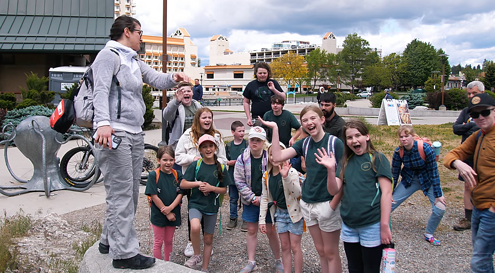

River Tech School of Performing Arts & Technology
A Performing Arts & Technology Education Center in Post Falls — for artistic & tech-savvy students.
Our School Had a Fire. We're Already Back.
On March 15th, a fire damaged the building where River Tech meets at The River Church, destroying classrooms and school facilities. All students and teachers are safe.
In true resurrection fashion, we secured a new home within days.
Where We Are Now. The Heart Church in Post Falls 927 E Polston Ave, Post Falls, ID 83854.
Classes resumed Monday, March 30. We are deeply grateful to The Heart Church for welcoming us so quickly and generously — blessing our school community in a way that matters.
This is our home as River Tech finishes the school year. Over the coming months, both River Tech and The Heart Church will be prayerfully and practically exploring what this partnership could look like moving forward. We are grateful, hopeful, and expectant for what God is doing in this season.
River Tech is fully back and accepting students. We are not diminished — we are more motivated than ever to offer the best possible education for artistic and tech-savvy students. If you've been considering River Tech for your family, now is the time. Check out our open house tour dates below and come see our new home for yourself.
How You Can Help. We lost all classroom materials, instruments, and supplies in the fire. If you'd like to help us finish the school year strong, we would be grateful for your support.
Who We Are
River Tech is a school of performing arts and technology based in Post Falls, Idaho. Our passionate teachers, comprehensive curriculum, and competency-based training model creates the perfect space for students to learn and grow.




At River Tech 1-12, creativity and innovation converge in a nurturing community. With class sizes around 15 students, roughly half that of public schools, our teachers are able to spend more time with each student. Grounded in enduring Christian values and a family-centered culture, our curriculum prepares students for life's realities, blending lessons in relationships, finances, and health with immersive technology and artistic expression.
Programs
River Tech School (Full-Time)
The complete River Tech experience: four to five days of integrated learning in performing arts, technology, and core academics — designed to shape confident, purposeful students grounded in Christian values and prepared for life.
River Tech À La Carte (Home School)
Choose specific River Tech classes to enrich your homeschool. Access our performing arts, science, social science, life skills, and technology programs in a community of learners while maintaining your family's educational rhythm.
Open House
Stronger than ever, we are now accepting applications for September 1st, 2026 start.
Join us for a tour at our new location to experience our heart, vision, and the opportunity to have all your questions answered personally.
Where: River Tech School of Performing Arts & Technology
927 E Polston Ave, Post Falls, ID 83854.
Next Start: Apply today to start September 1st, 2026.
Email: learn@rivertech.me
Idaho Parental Choice Tax Credit
River Tech is thrilled to participate in the Idaho Parental Choice Tax Credit program, signed into law on February 27, 2025. This initiative offers up to $5,000 per child (or $7,500 for special needs students) to help cover tuition starting July 1, 2025. Click here to learn more!
At River Tech, technology isn't just a subject; it's a way of thinking. Our students learn everything from coding & robotics to 3D-modeling & videography.
Here at River Tech we believe everyone can benefit from a strong tech base. Even careers that are not normally associated with tech benefit from being confident and at home in a technological world.
Our Tech Director, Jordan Ezell, has a Bachelor of Science Degree in Game Development from Full Sail University. He is passionate about teaching our students coding, robotics, and digital arts.
Our students learn to play multiple instruments including drums, bass, ukulele, guitar, keyboard, vocals, acting, dance, choir, and band. We put on regular concerts and musical theater production. (We just wrapped up Journey to Bethlehem and are working on a Summer choir performance).
Our Music Director, Dan Hegelund, is a professional vocal coach, choir director, music director, etc. He has thirty years of experience teaching and producing music and heads the River Tech Arts department. Expect concerts, musicals, studio recordings, music videos, choir trips, talent shows, music festivals, etc.
Our students learn mobility, sportsmanship, and an overcomer's mentality while playing sports and using professional workout equipment. We believe physical fitness is essential to a holistic education, teaching students to become masters over their bodies and train for longevity of life. Just as the Tabernacle reflected God's glory, our bodies should do the same: "your body is a temple of the Holy Spirit" (1 Cor 6:19-20).
Our Athletics Director, Jerome, is a certified math teacher with a B.A. in Mathematics and over five years of classroom experience, as well as homeschooling his 3 older children. He served as a Public Safety Officer, completing rigorous police, fire, and EMT training. He also played in the NFL with the Kansas City Chiefs, Jacksonville Jaguars, and Dallas Cowboys. At River Tech, Jerome leads our math and sports programs, mentoring students in mind, body, and character.
In a world that sometimes seems to spiral out of control, River Tech can provide stability. Christian, family-centered, team-building, visionary, and leadership developing, at River Tech your child will discover purpose and meaning.
Our teachers possess a contagious joy, clarity, and hopefulness that will propel your child to take on life with renewed faith and optimism. Our curriculum is tailored to cultivating competency, mastery, and confidence in God, in themselves, and in their community, so our students can face tomorrow with their heads and hearts lifted high. Read about our teachers here. Take a closer look at our curriculum here.
To us, competency-based education is an approach to teaching and learning where students progress through a curriculum at their own pace, based on their demonstrated mastery of specific competencies or skills. River Tech competency-based education is different from many traditional education models in that it focuses on the learner's ability to demonstrate what they've learned, rather than simply accumulating time spent in a classroom.
Dan & Mary Hegelund
Dan Hegelund, principal at River Tech, holds a B.S. and M.S in Political Science. Dan is a professional vocal coach, choir director, music director, etc. He has thirty years of experience teaching and producing music and heads the River Tech Arts department. Expect concerts, musicals, studio recordings, music videos, choir trips, talent shows, music festivals, etc.
Mary Hegelund holds a B.S. and M.S. in Education and leads River Tech Elementary. She has worked at a preschool, kindergarten, and elementary school and as a homeschooler of three children. Mary loves teaching children team building, teamwork, and leadership skills.

Jordan Ezell
Jordan Ezell holds a B.S. in Game Development from Full Sail University and a degree from Master's Commission in Biblical Counseling. He loves creating board games and video games, and can't wait to teach our students how to create their own games. Jordan is heading the Tech Department at River Tech. Expect your kids to learn programming, robotics, 3D animation, videography, sound engineering, game development, etc. River Tech has an outstanding tech program.

Caitlin Relvas
Caitlin Relvas has a B.A. in English and Classical Civilizations. She has a minor in Dance and has been studying and teaching dance for most of her life. Caitlin loves to teach K-1 students problem-solving skills and responsibility and teach middle and high school English students the art of writing and an appreciation for story.

Luke Hegelund
Luke Hegelund is the media director at River Tech, with four years of teaching experience. Luke is a proficient multi-instrumentalist, having offered private piano, guitar, and drum lessons outside of his work at River Tech. Additionally, he is a professional videographer, having produced wedding films, short films, and commercials. While working at River Tech, Luke is finishing his degree in Theology and pursuing a degree in education. Students can look forward to learning filmmaking, music, and 3D design from Luke.

Jerome Long
Jerome is a certified math teacher with a B.A. in Mathematics and over five years of classroom experience as well as homeschooling his 3 older children. He served as a Public Safety Officer, completing rigorous police, fire, and EMT training. He also played in the NFL with the Kansas City Chiefs, Jacksonville Jaguars, and Dallas Cowboys. At River Tech, Jerome leads our math and sports programs, mentoring students in mind, body, and character.

Guest Teachers
River Tech invites successful guest teachers to give a master workshop on a relevant topic. This could be a successful entrepreneur in how to start your own business, a professional musician in how to make it in the music industry, or a missionary to a third-world country about the importance of compassion and charity.
River Tech School: Where Creativity and Innovation Converge.
With small classes and unparalleled student-teacher ratios, River Tech is the top school in the area, receiving glowing reviews from parents & students as the best choice for your child's education. River Tech School of Performing Arts & Technology offers the very best in private Christian education in Post Falls, setting the standard for excellence by ensuring a personalized learning experience that stands out as the top choice for discerning parents comparing schools.